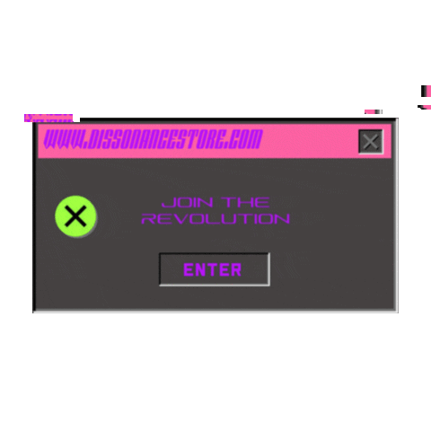
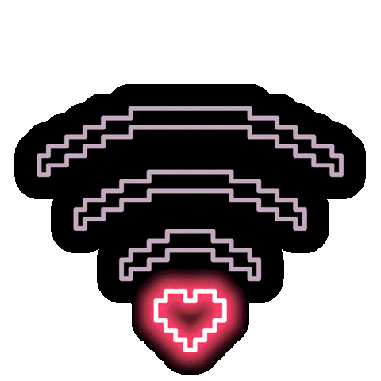

João Paulo
Desenvolvedor Backend Júnior
- 
- 
Sobre
Ola! meu nome é João Paulo Nascimento Frizzo, seja bem-vindo(a)!
Fiz minha descoberta sobre o mundo da programacao no final do ano de 2022, fiquei bastante curioso desde o primeiro dia de descoberta, mesmo nunca tendo atuado na area e trabalhando em tempo integral como chefe de logistica e fazendo curso suporior de Gestao de T.I consegui com dedicação e foco estudar diariamente de domingo a domingo nessa area onde me descobri muito contente onde consegui aprender bastante sobre Python, html, Java e Javascript, sei que ainda tenho muito o que aprender e busco uma oportunidade para me desenvolver como um futuro otimo programador. Meus principais hobbies são jogar, praticar exercicios fisicos, ver animes e séries.